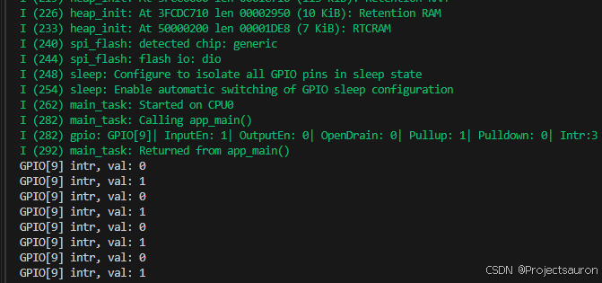

[toc]
一、基本介绍
API 参考路径 esp-idf/components/esp_driver_gpio/include/driver/gpio.h。
ESP-IDF 由多个组件组成，组件中包含专门为 ESP 芯片编写的代码或第三方库（即第三方组件）。对于某些第三方库，ESP-IDF 提供专用的包装器和接口，以简化对第三方库的使用，或提高其与 ESP-IDF 其他功能的兼容性。某些情况下，第三方组件将直接呈现底层库的原始 API。
1、配置结构体
为确保应用程序与未来 ESP-IDF 版本的兼容性，请正确初始化配置结构体。
多数 ESP-IDF 中的初始化、配置和安装函数（通常以 ..._init()、 ..._config() 和 ..._install() 命名）都需要一个指向配置结构体的指针作为参数。例如：
1 2 3 4 5 6 7 const esp_timer_create_args_t my_timer_args = { .callback = &my_timer_callback, .arg = callback_arg, .name = "my_timer" }; esp_timer_handle_t my_timer;esp_err_t err = esp_timer_create(&my_timer_args, &my_timer);
初始化函数不会存储指向配置结构体的指针，因此在栈上分配结构体是安全的。
下面介绍 GPIO 的配置结构体：
1 2 3 4 5 6 7 8 9 10 typedef struct { uint64_t pin_bit_mask; gpio_mode_t mode; gpio_pullup_t pull_up_en; gpio_pulldown_t pull_down_en; gpio_int_type_t intr_type; #if SOC_GPIO_SUPPORT_PIN_HYS_FILTER gpio_hys_ctrl_mode_t hys_ctrl_mode; #endif } gpio_config_t ;
pin_bit_mask：GPIO 引脚号。
比如 GPIO_NUM_2，则配置为 .pin_bit_mask = (1 << GPIO_NUM_2)，
mode：选择输入/输出模式pull_up_en：引脚上拉设置pull_down_en：引脚下拉设置intr_type：中断模式
有关这几个类型的定义在本文第三小节可以找到
2、常用 API 在使用 GPIO 相关的 API 时，要加上头文件：
1 #include "driver/gpio.h"
2.1 gpio_config 1 esp_err_t gpio_config (const gpio_config_t *pGPIOConfig) ;
参数
pGPIOConfig：GPIO 配置结构体，见第一小节
作用：
该函数用于初始化 GPIO 的 Mode、pull-up、PullDown、IntrType，
返回值
ESP_OK 成功ESP_ERR_INVALID_ARG 参数错误
2.2 gpio_reset_pin 1 esp_err_t gpio_reset_pin (gpio_num_t gpio_num)
参数：
作用
重置 GPIO 到默认状态（选择 GPIO 功能，启用上拉，禁用输入和输出）。
返回值
2.3 gpio_set_intr_type 1 esp_err_t gpio_set_intr_type (gpio_num_t gpio_num, gpio_int_type_t intr_type)
参数
gpio_num：引脚号intr_type：中断类型，见第三小节
作用
返回值
ESP_OK 成功ESP_ERR_INVALID_ARG 参数错误
2.4 gpio_intr_enable 1 esp_err_t gpio_intr_enable (gpio_num_t gpio_num)
参数
作用
返回值
ESP_OK 成功ESP_ERR_INVALID_ARG 参数错误
2.5 gpio_intr_disable 1 esp_err_t gpio_intr_disable (gpio_num_t gpio_num)
参数
作用
返回值
ESP_OK 成功ESP_ERR_INVALID_ARG 参数错误
2.6 gpio_set_level 1 esp_err_t gpio_set_level (gpio_num_t gpio_num, uint32_t level)
参数
gpio_num：引脚号level：0: 低；1: 高
作用
返回值
ESP_OK 成功ESP_ERR_INVALID_ARG 参数错误
通过启用 CONFIG_GPIO_CTRL_FUNC_IN_IRAM，此函数允许在 ISR 上下文中禁用缓存的情况下执行。
2.7 gpio_get_level 1 int gpio_get_level (gpio_num_t gpio_num)
如果引脚未配置为输入（或输入和输出），返回的值始终为 0。
2.8 gpio_set_direction 1 esp_err_t gpio_set_direction (gpio_num_t gpio_num, gpio_mode_t mode)
参数
gpio_num：引脚号mode：要设置的模式，见第三小节
作用
配置 GPIO 方向，例如仅输出，仅输入，输出和输入
返回值
ESP_OK 成功ESP_ERR_INVALID_ARG 参数错误
2.9 gpio_set_pull_mode 1 esp_err_t gpio_set_pull_mode (gpio_num_t gpio_num, gpio_pull_mode_t pull_mode)
参数
gpio_num：引脚号pull_mode：GPIO 拉高/拉低模式，见第三小节
作用
返回值
ESP_OK 成功ESP_ERR_INVALID_ARG 参数错误
2.10 gpio_isr_register 1 esp_err_t gpio_isr_register (void (*fn)(void *), void *arg, int intr_alloc_flags, gpio_isr_handle_t *handle)
参数
fn：中断处理函数arg ：中断处理函数的参数intr_alloc_flags：用于分配中断的标志。一个或多个（通过位或运算组合）ESP_INTR_FLAG_* 值。handle：返回句柄的指针。如果非 NULL，这里将返回中断的句柄。
esp32_idf/esp-idf/components/esp_hw_support/include/esp_intr_alloc.h：
1 2 3 4 5 6 7 8 9 10 11 12 #define ESP_INTR_FLAG_LEVEL1 (1<<1) #define ESP_INTR_FLAG_LEVEL2 (1<<2) #define ESP_INTR_FLAG_LEVEL3 (1<<3) #define ESP_INTR_FLAG_LEVEL4 (1<<4) #define ESP_INTR_FLAG_LEVEL5 (1<<5) #define ESP_INTR_FLAG_LEVEL6 (1<<6) #define ESP_INTR_FLAG_NMI (1<<7) #define ESP_INTR_FLAG_SHARED (1<<8) #define ESP_INTR_FLAG_EDGE (1<<9) #define ESP_INTR_FLAG_IRAM (1<<10) #define ESP_INTR_FLAG_INTRDISABLED (1<<11)
作用
注册 GPIO 中断处理程序，该处理程序是一个 ISR。处理程序将被附加到运行此函数的相同 CPU 核心上。每当发生任何 GPIO 中断时，都会调用此 ISR。
返回值
ESP_OK 成功ESP_ERR_INVALID_ARG 参数错误ESP_ERR_NOT_FOUND 在指定的标志下未找到可用的中断
2.11 gpio_install_isr_service 1 esp_err_t gpio_install_isr_service (int intr_alloc_flags)
参数
intr_alloc_flags：分配中断时使用的标志。一个或多个（按 OR 运算）ESP_INTR_FLAG_* 值。见 2.10。
作用
安装 GPIO 驱动程序的 ETS_GPIO_INTR_SOURCE ISR 处理程序服务，允许为每个引脚配置GPIO中断处理程序。
返回值
ESP_OK 成功ESP_ERR_INVALID_ARG 参数错误ESP_ERR_NOT_FOUND 没有找到具有指定标志的空中断ESP_ERR_INVALID_STATE ISR 服务未初始化。
此功能与 gpio_isr_register() 不兼容 - 如果使用该功能，将为所有 GPIO 中断注册一个全局中断服务程序（ISR）。如果使用此功能，中断服务提供了一个全局 GPIO ISR，通过 gpio_isr_handler_add() 函数注册单个引脚处理器。
2.12 gpio_uninstall_isr_service 1 void gpio_uninstall_isr_service (void )
卸载驱动的 GPIO ISR 服务，释放相关资源。
2.13 gpio_isr_handler_add 1 esp_err_t gpio_isr_handler_add (gpio_num_t gpio_num, gpio_isr_t isr_handler, void * args)
参数
gpio_num：引脚号isr_handler：中断处理函数args：中断处理函数的参数
作用
为相应的 GPIO 引脚添加 ISR 处理器。使用完 gpio_install_isr_service() 后，调用此函数以安装驱动程序的 GPIO ISR 服务。
返回值
ESP_OK 成功ESP_ERR_INVALID_ARG 参数错误ESP_ERR_INVALID_STATE ISR 服务未初始化。
中断服务例行程序（ISR）处理器不再需要使用 IRAM_ATTR 进行声明，除非在为中断服务程序（ISR）分配 gpio_install_isr_service() 时传递 ESP_INTR_FLAG_IRAM 标志。menuconfig 中可配置为“ISR 堆栈大小”）。与全局 GPIO 中断处理器相比，这个限制较小，因为多了一层间接性。
2.14 gpio_isr_handler_remove 1 esp_err_t gpio_isr_handler_remove (gpio_num_t gpio_num)
参数
作用
返回值
ESP_OK 成功ESP_ERR_INVALID_ARG 参数错误ESP_ERR_INVALID_STATE ISR 服务未初始化。
3、枚举类型 选自文件：esp32_idf/esp-idf/components/hal/include/hal/gpio_types.h
3.1 gpio_mode_t 1 2 3 4 5 6 7 8 typedef enum { GPIO_MODE_DISABLE = GPIO_MODE_DEF_DISABLE, GPIO_MODE_INPUT = GPIO_MODE_DEF_INPUT, GPIO_MODE_OUTPUT = GPIO_MODE_DEF_OUTPUT, GPIO_MODE_OUTPUT_OD = ((GPIO_MODE_DEF_OUTPUT) | (GPIO_MODE_DEF_OD)), GPIO_MODE_INPUT_OUTPUT_OD = ((GPIO_MODE_DEF_INPUT) | (GPIO_MODE_DEF_OUTPUT) | (GPIO_MODE_DEF_OD)), GPIO_MODE_INPUT_OUTPUT = ((GPIO_MODE_DEF_INPUT) | (GPIO_MODE_DEF_OUTPUT)), } gpio_mode_t ;
3.2 gpio_pullup_t 1 2 3 4 typedef enum { GPIO_PULLUP_DISABLE = 0x0 , GPIO_PULLUP_ENABLE = 0x1 , } gpio_pullup_t ;
3.3 gpio_pulldown_t 1 2 3 4 typedef enum { GPIO_PULLDOWN_DISABLE = 0x0 , GPIO_PULLDOWN_ENABLE = 0x1 , } gpio_pulldown_t ;
3.4 gpio_pull_mode_t 1 2 3 4 5 6 7 typedef enum { GPIO_PULLUP_ONLY, GPIO_PULLDOWN_ONLY, GPIO_PULLUP_PULLDOWN, GPIO_FLOATING, } gpio_pull_mode_t ;
3.5 gpio_int_type_t 1 2 3 4 5 6 7 8 9 typedef enum { GPIO_INTR_DISABLE = 0 , GPIO_INTR_POSEDGE = 1 , GPIO_INTR_NEGEDGE = 2 , GPIO_INTR_ANYEDGE = 3 , GPIO_INTR_LOW_LEVEL = 4 , GPIO_INTR_HIGH_LEVEL = 5 , GPIO_INTR_MAX, } gpio_int_type_t ;
4、宏定义 4.1 GPIO_PIN_COUNT 用来表示 GPIO 引脚个数。
1 2 3 4 5 #define GPIO_PIN_COUNT (SOC_GPIO_PIN_COUNT) ... #define SOC_GPIO_PIN_COUNT 40
4.2 GPIO_IS_VALID_GPIO 检查 GPIO 引脚号是否有效。
1 2 3 4 5 6 7 #define GPIO_IS_VALID_GPIO(gpio_num) ((gpio_num >= 0) && \ (((1ULL << (gpio_num)) & SOC_GPIO_VALID_GPIO_MASK) != 0)) ... #define SOC_GPIO_VALID_GPIO_MASK (0xFFFFFFFFFFULL & ~(0ULL | BIT24 | BIT28 | BIT29 | BIT30 | BIT31))
4.3 GPIO_IS_VALID_OUTPUT_GPIO 检查引脚号是否是有效的 GPIO 输出模式
1 2 3 4 5 6 7 #define GPIO_IS_VALID_OUTPUT_GPIO(gpio_num) ((gpio_num >= 0) && \ (((1ULL << (gpio_num)) & SOC_GPIO_VALID_OUTPUT_GPIO_MASK) != 0)) ... #define SOC_GPIO_VALID_OUTPUT_GPIO_MASK (SOC_GPIO_VALID_GPIO_MASK & ~(0ULL | BIT34 | BIT35 | BIT36 | BIT37 | BIT38 | BIT39))
4.4 GPIO_IS_VALID_DIGITAL_IO_PAD 检查引脚号是否是有效的 I/O pad。
1 2 3 4 5 6 7 #define GPIO_IS_VALID_DIGITAL_IO_PAD(gpio_num) ((gpio_num >= 0) && \ (((1ULL << (gpio_num)) & SOC_GPIO_VALID_DIGITAL_IO_PAD_MASK) != 0)) ... #define SOC_GPIO_VALID_DIGITAL_IO_PAD_MASK 0xEF0FEAULL
三、实例操作 1、例一——简单的点灯程序 这一小节，以一个简单的点灯程序为例，来熟悉一下 ESP32-IDF GPIO 的使用。
创建程序相关见前：ESP32-IDF 在 Ubuntu 下的配置
例程代码如下：
1 2 3 4 5 6 7 8 9 10 11 12 13 14 15 16 17 18 19 20 21 22 23 24 25 26 27 #define LED1_GPIO GPIO_NUM_12 void led1_run_task (void ) { int gpio_level = 0 ; while (1 ) { gpio_level = !gpio_level; gpio_set_level(LED1_GPIO, gpio_level); vTaskDelay(pdMS_TO_TICKS(500 )); } } void app_main (void ) { gpio_config_t led_conf = { .pin_bit_mask = (1 << LED1_GPIO), .pull_up_en = 1 , .pull_down_en = GPIO_PULLDOWN_DISABLE, .mode = GPIO_MODE_OUTPUT, .intr_type = GPIO_INTR_DISABLE, }; gpio_config(&led_conf); xTaskCreate((void *)led1_run_task, "led1" , 1024 * 2 , NULL , 0 , NULL ); }
2、例二——添加中断 本例将读取外部按键 KEY 的状态，当按下 KEY 是窗口打印信息。
2.1 通过 GPIO 读取实现 这里通过 GPIO 读取 KEY 引脚来实现“中断”：
1 2 3 4 5 6 7 8 9 10 11 12 13 14 15 16 17 18 19 20 21 22 23 #define KEY_GPIO GPIO_NUM_9 void app_main (void ) { gpio_config_t key_conf = { .pin_bit_mask = (1ULL << KEY_GPIO), .mode = GPIO_MODE_INPUT, .pull_up_en = GPIO_PULLUP_ENABLE, .pull_down_en = GPIO_PULLDOWN_DISABLE, .intr_type = GPIO_INTR_POSEDGE, }; gpio_config(&key_conf); while (1 ) { if (gpio_get_level(KEY_GPIO) == 0 ) { vTaskDelay(pdMS_TO_TICKS(10 )); while (gpio_get_level(KEY_GPIO) == 0 ); printf ("KEY PRESSED\n" ); } } }
2.2 通过中断函数实现 1 2 3 4 5 6 7 8 9 10 11 12 13 14 15 16 17 18 19 20 21 22 23 24 25 26 27 28 29 30 31 32 33 34 35 36 37 38 39 40 41 42 43 #define GPIO_INPUT_IO 9 #define GPIO_INPUT_PIN_SEL 1ULL<<GPIO_INPUT_IO #define ESP_INTR_FLAG_DEFAULT 0 static QueueHandle_t gpio_evt_queue = NULL ;static void IRAM_ATTR gpio_isr_handler (void * arg) { uint32_t gpio_num = (uint32_t ) arg; xQueueSendFromISR(gpio_evt_queue, &gpio_num, NULL ); } static void gpio_task_example (void * arg) { uint32_t io_num; for (;;) { if (xQueueReceive(gpio_evt_queue, &io_num, portMAX_DELAY)) { printf ("GPIO[%ld] intr, val: %d\n" , (uint32_t )io_num, gpio_get_level(io_num)); } } } void app_main (void ) { gpio_config_t gpio_conf = { .intr_type = GPIO_INTR_ANYEDGE, .pin_bit_mask = GPIO_INPUT_PIN_SEL, .mode = GPIO_MODE_INPUT, .pull_up_en = 1 , }; gpio_config(&gpio_conf); gpio_evt_queue = xQueueCreate(10 , sizeof (uint32_t )); xTaskCreate(gpio_task_example, "gpio_task_example" , 2048 , NULL , 10 , NULL ); gpio_install_isr_service(ESP_INTR_FLAG_DEFAULT); gpio_isr_handler_add(GPIO_INPUT_IO, gpio_isr_handler, (void *) GPIO_INPUT_IO); }
